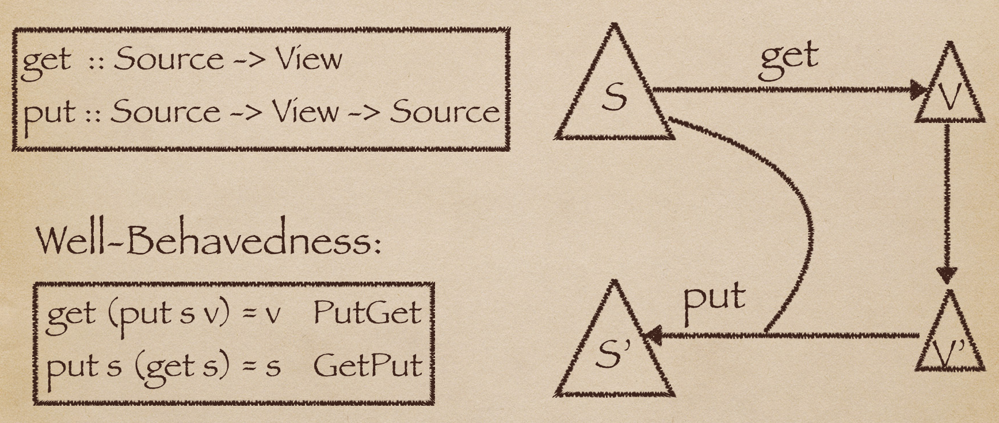

Bidirectional Transformation
Bidirectional Transformation

给定一个数据源s，我们想从中抽取部分信息作为v，则需要写一个get程序，
类型为Source -> View。
用户可能修改v为v’,我们希望将这种修改反应到原来的s上，则需要写一个put程序，
类型为Source -> View -> Source。
对于任意get,put，如果它们满足GetPut和PutGet law，则是Well-Behaved。
PutGet law的直觉解释是:将一个v putback，得到一个新的s’，立即对s’调用get，自然应该返回v。
GetPut law的直觉解释是:从一个s中取出v，立即将v putback到s，对s没有影响，自然应该返回s。
Bidirectional Language
通常程序员需要分开写get和put两个程序。首先Well-Behavedness难以保证，程序员一般不会去check；其次修改一个程序，另一个程序也需要修改。
Bidirectional language程序是一份可以从中derive出get和put的描述。从中derive出的get和put是保证Well-Behaved。
dGet :: BLProg -> Source -> View
dPut :: BLProg -> Source -> View -> Source
将dGet partial apply到BL程序就可以得到想要的get；将dPut partial apply到BL程序就可以得到想要的put。
My research
目前lab里设计了一种put-based Bidirectional language，用户在写程序的时候实际上是在指定putback的语义。我用一个月时间看懂了源码并添加了一些语法糖。
如果你的研究或应用领域存在需要经常写这些get和put程序的场景，请联系我！